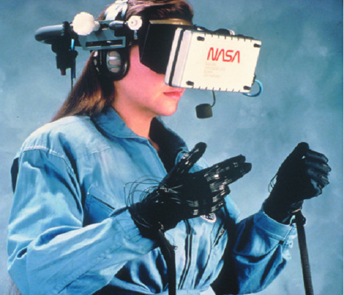

Histoire de la VR
La Réalité virtuelle ou VR (Virtual Reality en anglais) est à la mode en ce début de XXIème siècle et cela ne vous a certainement pas échappé. L'Oculus Rift, si ce nom vous est familier, c'est normal, car il s'agit du casque VR qui a relancé l'engouement envers cette technologie auprès du grand public et qui a été racheté à 2 milliards de dollars par Facebook. Relancer l'engouement ? Oui, car cette technologie ne date pas d'hier, plusieurs essaies ont étés tentés notamment au cours des années 90 mais sans succès. Nous allons donc voir de manière non exhaustive, l'histoire de la realité virtuelle de ces balbutiements à son preimier échec.
Le Sensorama
Notre voyage commence en 1962 avec cette machine qui se nomme le sensorama. Il s'agit d'un cinéma individuel qui exploite les différents sens d'une personne grâce à des ventilateurs et un siège vibrant. Cette machine provient de l'imagination de Morton Heilig, un américain qui est tous simplement considéré comme étant le pionner de la réalité virtuelle.
L'Epée de Damoclès

Notre voyage à travers le temps continue et nous arrivons en 1968 avec le tout premier casque VR, l'épée de Damoclès inventé par Ivan Sutherland, un américain ingénieur en informatique. Ce casque est soutenu par un bras mécanique accroché au plafond, à cause de son poids très élévé qui entrave donc les mouvements. Le fait d'avoir un énorme bras mécanique au dessus de la tête à inspire Ivan qui a donc decidé de choisir ce drôle de nom à son casque.
Le Dataglove
Continuons notre bond dans le temps pour arriver dans les années 80. Le terme VR se popularise auprès du grand public grâce à l'invention de Jaron Lanier (un américain si vous n'aviez pas deviné), le Dataglove (gant de données en français) qui retranscrit les mouvements de notre main dans un monde virtuel qu'affiche un casque de VR.
Les années 90

Nous y sommes, les années 90, une période clé dans l'histoire de la Vr car, comme dit lors du paragraphe de début de cette section (oui je vous vois sroller à toute allure pour voir ce que j'avais dit précédemmant), il s'agit de la première tentative de séduction de la VR auprès du grand public. Une date est à retenir car elle va cristalliser cette tentative, avec notamment 3 produits que j'ai selectionné, il s'agit de 1995.
Le Virtual Boy

Commencons tout d'abord par le Virtual Boy. Le Virtual Boy crée par Nintendo, plus précisément par Gunpei Yokoi, un japonais (pour changer) créateur entre autre de Game and Watch. Il s'agit en réalité d'une console portale qui ofrre une 3D stéréoscopique grâce à 2 écrans, 1 par oeil, mais Nintendo avait décidé de le présenter comme un casque VR.Il ne s'agit même pas d'un casque puisqu'il ne s'attache pas autour de la tête mais doit être posé sur une surface solide ou il peut reposer avec un bipied.
Le Virtual Io I-Glasses
Nous nous attaquons désormais aux premières I-Glasses (lunettes informatique) de l'Histoire, et oui sorti en 1995 le Virtual Io I-Glasses sont non seulement les premières du marché mais aussi l'un des premiers casques VR abordable du marché. Ayant un design petit et léger,il est ainsi confortable à porté mais il n'est pas pour autant transportable partout puisqu'il doit être relié à un PC par une énorme câble VGA.
Le VFX-1
Nous arrivons sur du lourd, du très lourd même, nous allons parler du VFX-1, conçu par Forte Technologies, c'est un casque VR destiné aux jeux vidéos, il s'agit ainsi du premier vrai casque vr accesible au grand public, même si son prix de lancement était assez élevé (599$ à l'époque ~7000 francs pour les plus vieux d'entre vous). Les casque actuelles si on omet le fait qu'il soit bien plus perfomants, sont identiques au VFX-1.
Et Aujourd'hui ?
Comme nous venons de le voir 1995 a été une année riche pour la VR et pourtant malgré cela, la Vr n'a pas su plaire au grand public. Pourquoi donc me demanderez-vous? Tous simplement pour 2 raisons, le prix et la technologie qui n'était pas assez évolué à l'époque pour lui permettre un bon developpement. D'ailleurs bien que la technologie actuelle offre une meilleur expérience de la VR, le prix reste lui un obstacle pour sa démocratisation auprès du grand public. C'est le défi qui attend les différents casques, de proposer un bon rapport qualité/prix tout en innovant, que se soit pour l'Oculus Rift, le HTC Vive ou encore du coté des smartphones, le Samsung Gear VR ou le Zeiss VR One.